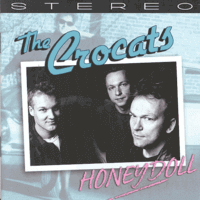

the Crocats - Honeydoll (Album, 2001)
01 - Rock Billy Boogie (2:14)
02 - Honey Doll (2:29)
03 - Ducktails (2:31)
04 - Rockabilly Dog (2:38)
05 - Montana Millie (2:55)
06 - Whistling Jones (2:58)
07 - Don't You Rock Me Daddy-O (1:44)
08 - Lonesome Coyote (3:03)
09 - Motor Man (2:41)
10 - Always In Love (2:12)
11 - Boomerang (2:29)
12 - Honey Don't (3:04)
13 - Truckin' (2:15)
14 - Some Of Your Loving Won't Do (3:22)
15 - My Home Town (2:28)
16 - Killer Walk (2:54)
17 - Always In Love (alt.) (2:14)
18 - Red Green Go (2:39)
19 - Rock City (alt.) (3:20)
20 - My Home Town (live) (2:30)
21 - Always In Love (live) (2:16)
© Rarity Records :: [C192665] © Tombstone Records [TOMB-DISC 674]
Notes
Holland.
Harjen - Percussion, Backing vocals
Ed - Guitars, Vocals
Ruben - Doublebass, Banjo, Backing vocals
Alise van Soest - Lead vocal (on track 11)
Recorded and mixed at the Farm sound studio, Heelsum, NL
Engineer - Wil 'the Pus' Hesen
Track 10, 16, 17, 18, 19, 20 and 21 are bonus tracks on CD release
Tracks 20 and 21 were recorded live
Almost all songs are credited to E. Dieckmann, but "Rock Billie Boogie" is credited to J&D Burnette, "Don't You Rock Me Daddy-O" is credited to Varley/Whytton, "Honey Don'T" is credited to C.Perkins
reference information: Discogs®
Review
070/366 (Project 366)
Fantastic diversity of moods and sound. Something authentic, something crazy, something rockin', something rollin', something mad and psycho, something rusty and even gentle doo-wop. Rock a lot, country a bit. Modern quite, authentic still. Musicianship and experiments.